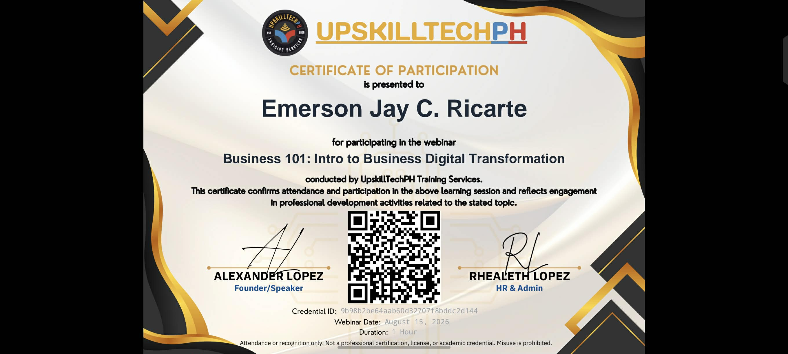
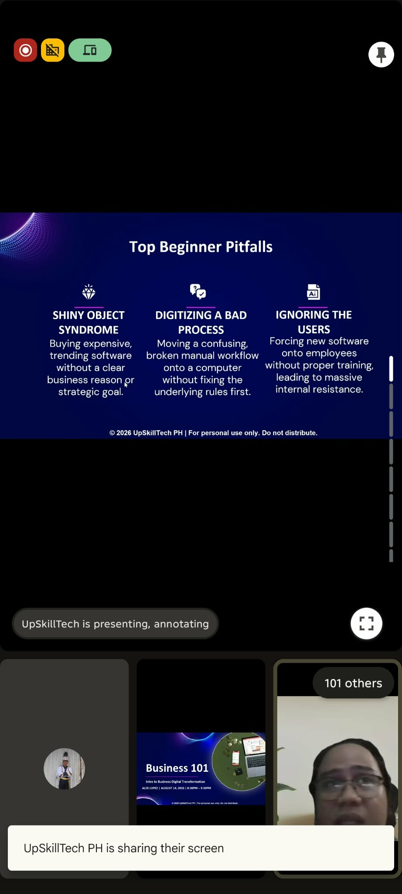
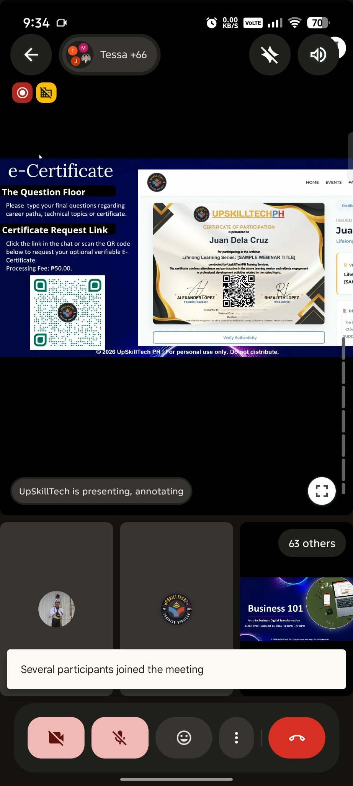
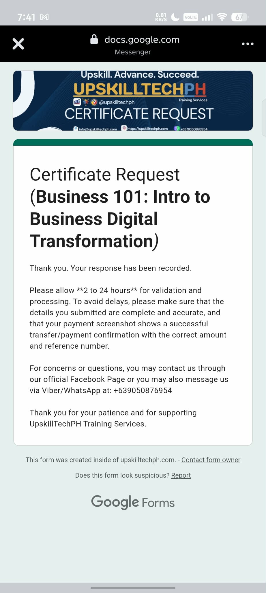

Certificate of Participation — Business 101: Intro to Business Digital Transformation, UpskillTechPH Training Services, August 15, 2026

Live session — "Top Beginner Pitfalls" slide

Live session — e-Certificate request instructions

Certificate request form — response recorded
On August 15, 2026, I attended the online webinar "Business 101: Intro to Business Digital Transformation," organized by UpskillTechPH Training Services. The one-hour session introduced digital transformation as a modernization process — how organizations move core operations onto digital systems to stay competitive rather than treating technology as a side project.
Modernization isn't a single upgrade — it's an ongoing shift in how a business operates.
The discussion framed digital transformation the same way IT teams think about cloud migration and DevOps: incremental, continuous change rather than a one-time overhaul. For an entrepreneur, this is a familiar lesson in technology adoption — sustainable growth comes from steady, deliberate change rather than chasing every new tool.
What I found most relevant to running a business was the emphasis on readiness — that successful modernization depends less on picking the newest tool and more on preparing people, workflows, and infrastructure to actually use it well.
Digital transformation is a continuous process of modernizing operations, not a one-time system upgrade.
Organizations benefit from treating change management and technology adoption as equally important.
Readiness — of people, processes, and infrastructure — determines whether modernization efforts succeed.
Small, incremental improvements sustain long-term modernization better than large, infrequent overhauls.